Usability Evaluation of TypeForm
Preface
This project was carried out for class INLS 719: Usability Testing and Evaluation
Typeform is a free, online platform that allows users to create and distribute various custom form types using their form creation tools. TypeForm is known amongst its users for its aesthetically pleasing forms and both minimalistic and user-friendly form creation experience.
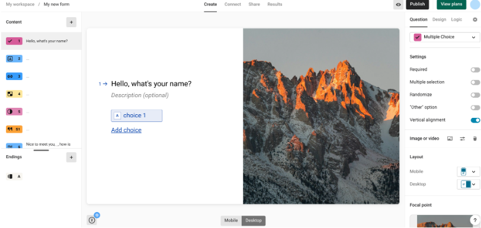Why test on Typeform?
Typeform was selected due to a great interest in its stand-out, minimalist interface for form creation. From this stemmed a curiosity to discover and analyze any functionality that might have been sacrificed to improve the sleek interface that TypeForm boasts.
Evaluation Goals
Purpose: Measure how easily a new user can create and publish a survey on Typeform without prior experience
- Analyze learnability: Measure the time it takes a new user with no previous training/experience to create a thorough survey form with various (or all) of the query types provided. This includes formats and tools from the following options displayed: 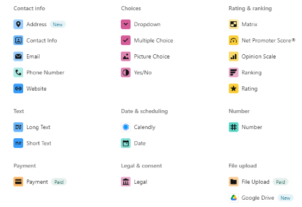
- Performance: Understand which actions cause the most difficulty or confusion for users and analyze design aspects that caused these issues
- Are certain icons and labels unclear or placed in non intuitive locations?
- How long does it take for users to perform common tasks such as question editing, image manipulation, branching questions, etc.?
- Satisfaction: Evaluate how enjoyable the system is to use based on direct user feedback.
Methodology
- Heuristic evaluation using Nielsen Norman's 10 Usability Heuristics for User Interface Design Heuristic Evaluation: by Caden Gregorio
- Usability testing with sample users
- For the usability test, participants will be provided 8 sample tasks that have been formed to test certain aspects of the Typeform system.
- Participants will be asked to engage in think-aloud activities, and their audio as well as screen will be recorded if given permission.
- Additionally, the time taken for a participant to complete a task will be recorded to later compare to expert users' time using the system.
The item below depicts the moderator guide section from the project's Test Plan Deliverable, including the consent form as well as task print outs and pre-test + post-test surveys for conducting each session.
Each session included at least one session moderator, one observer to keep time, and one note taker to write down important struggles and commentary from the participant throughout the session. Moderators will meet the participants outside of the test room, introduce themselves and the study, and present consent forms as well as answering any questions along the way. A pre-test survey will be administered, and with the consent form received, the test tasks will begin when the participant is ready. After the tasks are completed, the moderator will present a post-test questionnaire.
Analysis
Both quantitative and qualitative analysis were performed in order to conclude various findings for this usability evaluation.
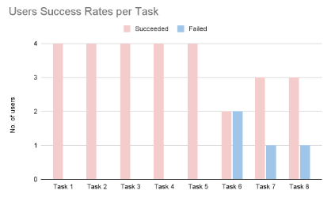User success rates indicate which parts of the Typeform platform may have been difficult for users. Task 6 involved using branching logic, task 7 involved locating the accessibility icon, and task 8 involved locating the QR code option.
Given the overall success of more than half of the tasks, it can be suggested that Typeform lines up with user expectations for a form-taking software.
The intuitiveness of each task varied throughout the tasks. There were instances of high intuitiveness clusters such as Tasks 2 5 and 8 where 75% of the participants rated the task a 5 out of 5 for intuitiveness- 5 being the most intuitive. As such, we can see that particularly low intuitiveness tasks may indicate places that could be reworked for better user experience such as Task 1 which tested labels and function of different question types, task 4 which asked users to locate and use multiple image manipulation features, and task 6 which tested branching logic.
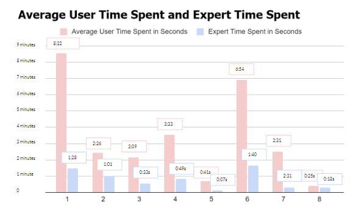This graph depicts a comparison of the time it took expert users to complete the 8 tasks versus the time it took new users from our usability testing sessions to complete the tasks. Tasks with large time gaps can indicate that those features may be more difficult to learn for a new user than others.
Specific Notable Issues:
-
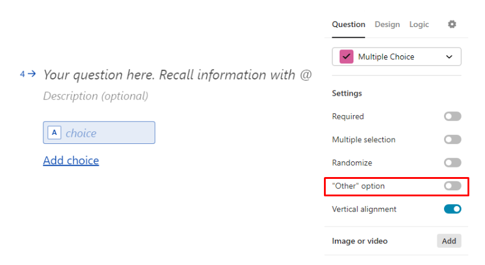
- In task 2, participants struggled to understand what " "other" option " meant in the settings. When prompted to add an option on the form for form-takers to enter their own answer in a multiple choice question, all participants opted to manually add the word "Other" as an option as opposed to using the correct " "other" option " that accomplishes this task.
- Additionally, a few participants also communicated wanting to be able to preview the form to ensure that form-takers could enter in their own option; however, they were unable to find the preview feature indicated in the top right corner.
- 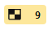 In task 3, participants struggled to identify the matrix icon with their preconceived notion of what a matrix would look like, thus making it more difficult to locate this feature. 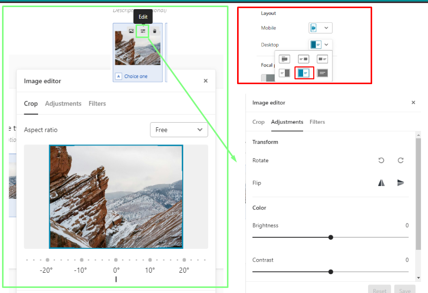
- For task 4, participants were asked to move an image to the left side of the screen. A few participants noted that they were confused by the label of "layout" if it only applies to the image location, and indicated that they felt this menu should either be clearly labelled by its function, or moved to be a part of the image editing menus.
- For task 6, participants were instructed to create a branching question that lead to specific results using the branching logic feature in Typeform. However, all participants were stopped when their times were nearing 10 minutes for time sake. This may indicate that this feature is difficult for users to figure out how to navigate on their own.
- In task 7, participants were asked to find the accessibility menu and fix up to three accessibility issues in their form; however, the accessibility menu proved to be very difficult to locate due to its small icon on the screen and lack of labeling for those who were unaware of what the universal accessibility icon looks like.
Recommendations
1. Add descriptions for all labels to clarify any feature ambiguity
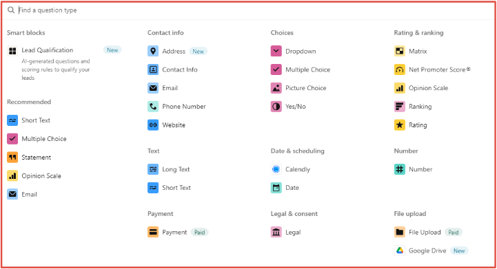 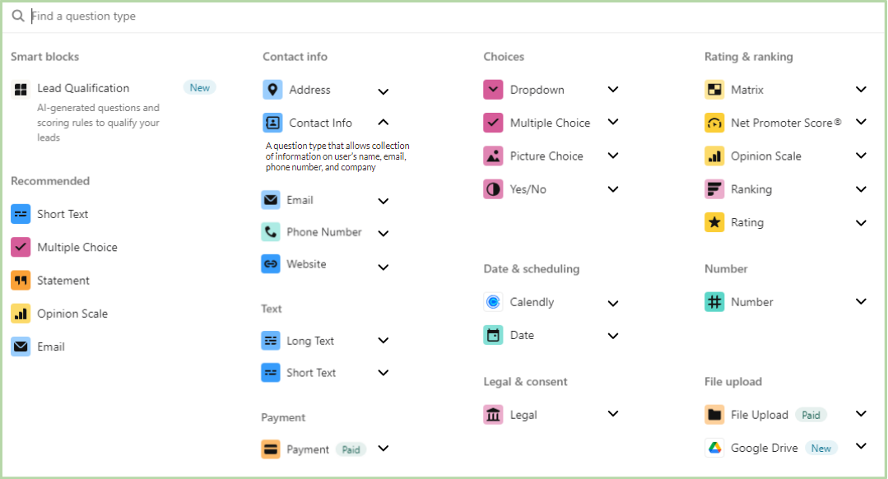The first image shows how the current layout of question types looks. The second image depicts a suggestion on how descriptions may be incorporated into these labels to clarify the meaning of each question type.
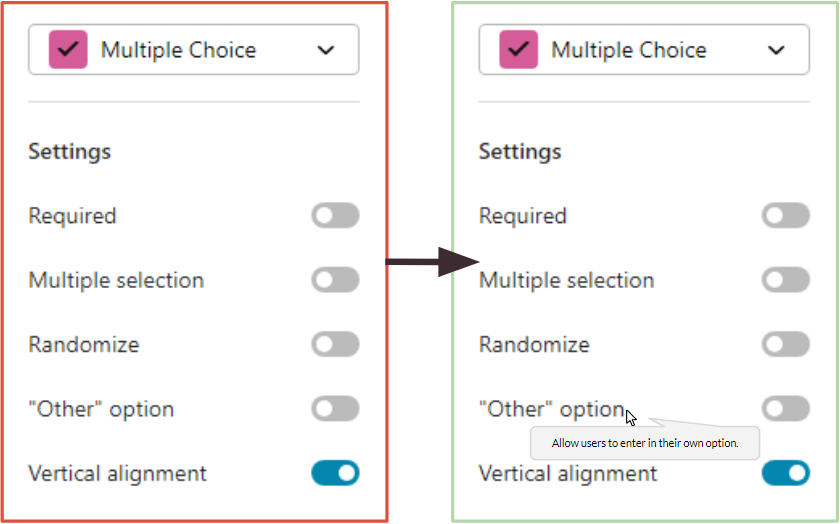The above image depicts a possibility for pop-up descriptions to help clarify toggleleable options.
2. Visible help for complex interfaces
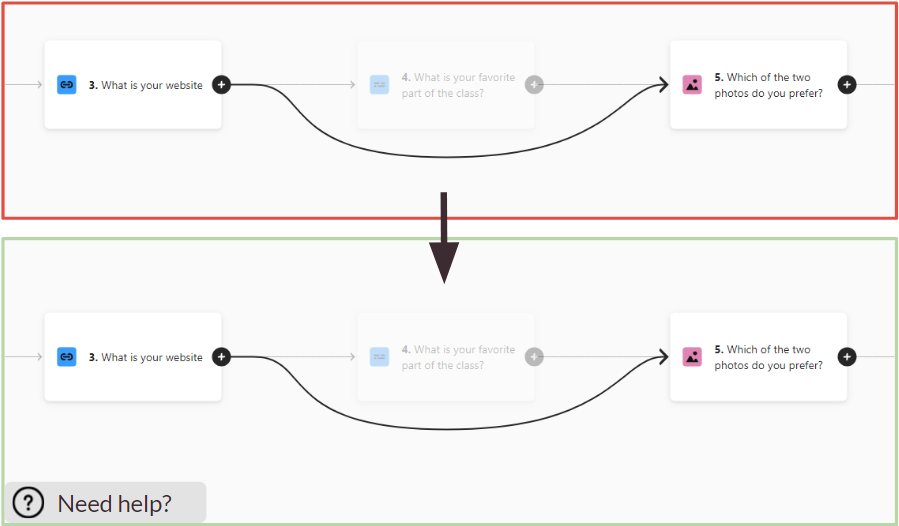This image depicts the current look of the branching screen (top image) and a recommended addition of a help button on the bottom image. While users are offered a tour when creating a new account, users that choose to skip this (all participants except one of our participants chose to do this tour) cannot find the tour again. Having a visible help sign on a feature that is expected to be trickier can help users feel less frustrated and additionally help Typeform with retaining its users.
3. Enlarge feature icons and/or add labels
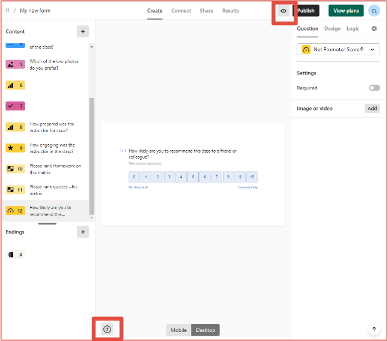 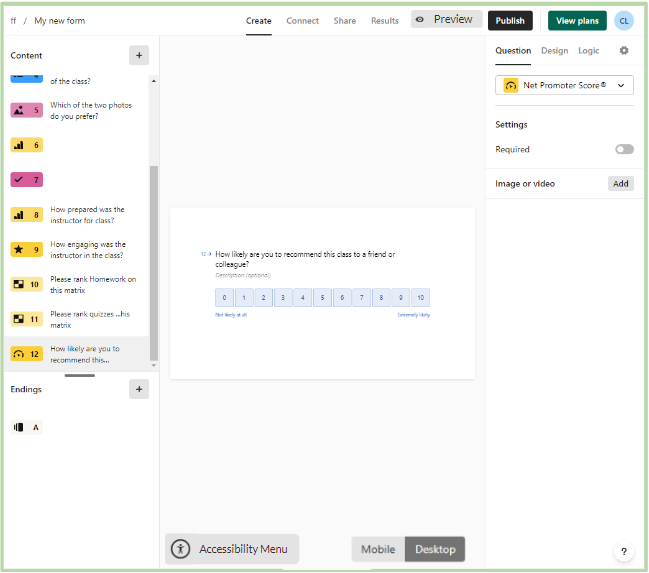The top image depicts the current interface of Typeform form editor with the preview and accessibility menu icons outlined. These icons proved difficult to locate and at times difficult to identify the use of in our usability tests. As such, a recommendation (as portrayed in the second image) is to add a text label to the feature, as well as enlarging the icon so that it is easier to both locate and identify.